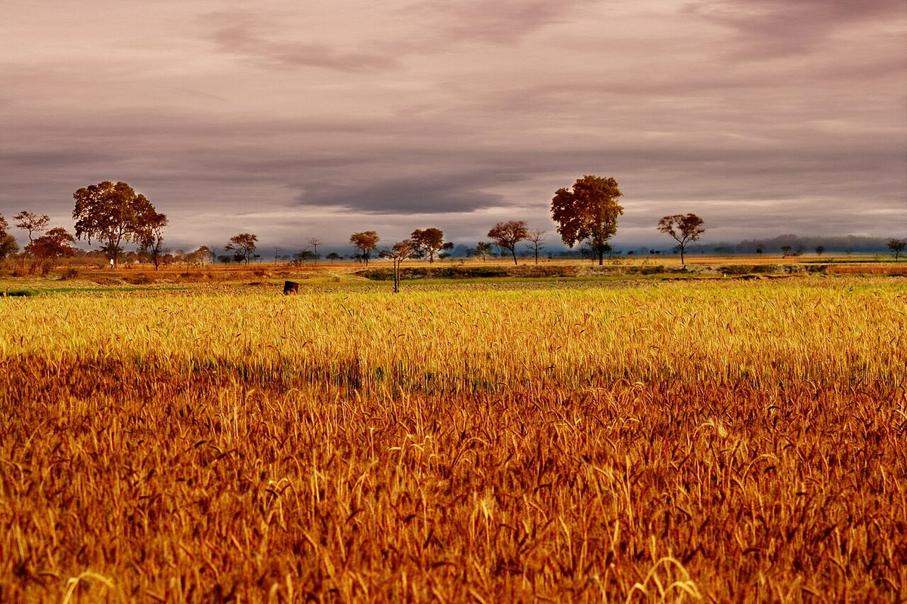

長野県青木村 / BAKERY
ふと食べたくなる、
暮らしにとけこむパンを。
MasAoki Bakeryは、横浜のベーカリーで育った店主が、家族とともに青木村で開いたパン屋です。
お店の由来と想い
横浜の味を受け継ぎ、青木村へ。
紹介記事によると、店主の德永将生さんは、ご両親が横浜で開いたベーカリー「ベッカライ徳多朗」でパン作りを学びました。独立とご家族の移住が重なり、2024年6月、長野県小県郡青木村にお店を開いたとされています。
目指しているのは、特別な食材や既製品のようなパンではなく、「生活の中に自然に溶け込むようなパン」。季節感や食材の組み合わせから生まれる味わいを大切に、日常のパンを手作りしているそうです。また、地域やお客さん同士がつながる場所にしたい、という想いも紹介されています。
情報源: 長野県信用保証協会「夢追い人」/Instagram
店名の意味は確認できていません。このページの見出しなど、上記の事実以外の言い回しは制作側の表現です。



パンのこと
毎日のテーブルに並ぶパン。
紹介記事では、定番の食パン、パン・ド・ロデヴ、デニッシュ、スコーン、季節の惣菜パンやスイーツパンが挙げられています。看板は、デンマークの主食であるライ麦パン「ロブロ」。青木村オリジナルブランドのそば「タチアカネ」のそば実と胡桃を練り込んだパンと紹介されています。店内にはイートインスペースもあるとのことです。
品ぞろえは日により変わることがあります。最新情報はInstagramをご覧ください。下の写真はパンの雰囲気を伝えるフリー素材で、お店の商品ではありません。


口コミ(イメージ例)
こんな声が届くお店を目指して。
以下は制作側が作成した「イメージ例」で、実在のお客様の声ではありません。
朝のうちに寄って、焼きたてのパンをイートインでいただきました。ほっとする素朴な味わいでした。
ライ麦のパンは噛むほどに香りが広がります。家の食卓にもよく合いそうです。
田んぼの中の古い家のようなお店で、のんびりした気持ちになれました。また寄りたいです。
ご案内
アクセス
| 所在地 | 〒386-1607 長野県小県郡青木村奈良本380-5 |
|---|---|
| 電話 | 準備中 |
| 営業時間 | 準備中 |
| 定休日 | 準備中 |
| SNS | Instagram @masaoki_bakery |
営業時間・定休日は変更されることがあるため掲載していません。来店前にInstagramでご確認ください。